Generazione RDA/RLE/RDP
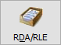
Una volta che l’ODP è pianificato è possibile procedere
alla generazione delle RDA per l’approvvigionamento dei materiali e delle
RLE per l'"approvvigionamento” di lavorazioni esterne.
Nel caso di gestione di più unità produttive in cui una unità produttiva
produce semilavorati utilizzati da un’altra unità produttiva saranno create
anche le eventuali RDP per i componenti di tipo materia prima che sono
instradati su un’unità produttiva diversa rispetto a quella del composto.
Le RDA costituiscono il punto di contatto fra la produzione e l’ufficio
acquisti. Le RDA vengono generate come provvisorie (stato in valutazione);
ogni volta che viene lanciata la generazione delle nuove RDA eventuali
RDA provvisorie vengono eliminate. Se l’operatore ne ha facoltà (è sia
operatore che responsabile di produzione) può fare in modo di creare la
RDA come approvata.
La RDA così creata entra nella gestione del modulo Richieste di acquisto
e da esso viene trattato secondo le logiche già conosciute per tale modulo.
Dalla gestione del piano una volta generata la RDA è possibile accedere
alla funzione di gestione RDA da cui eventualmente apportare modifiche
alle RDA create e generare (se previsto) automaticamente anche l’ordine
a fornitore.
Le RLE vengono generate solo per le fasi esterne del ciclo e costituiscono
il punto di contatto fra la gestione produzione e la gestione del conto
lavoro.
Dalla gestione del piano è possibile accedere, una volta generate le
RLE, al programma di assegnazione fornitore, al termine del quale è possibile
procedere alla generazione dell’OT.
Una volta generato l’OT, l’ODL viene posto in stato di lanciato e non
è più possibile annullare la pianificazione (per poter fare questo è necessario
cancellare l’OT).
Viene proposta la data di fine elaborazione basandosi sui giorni presenti
in configurazione, ed è possibile specificare anche una data di inizio
consegna e come e se deve essere utilizzato il lotto di riordino; la casella
"Considera provvisori" è utilizzata per il calcolo della disponibilità
dei componenti selezionati; se spuntata vengono inclusi nel calcolo anche
gli impegni dei componenti di ODP non pianificati, altrimenti considera
solo gli impegni dei componenti relativi ai soli ODP pianificati (casella
vuota); se attiva la "Gestione misure componenti" il parametro
sarà non spuntato e disabilitato. La pressione sul pulsante Selezione
effettua l'elaborazione e mostra nelle griglie le materie prime che possono
eventualmente essere oggetto di generazione RDA e le eventuali RLE che
saranno generate.
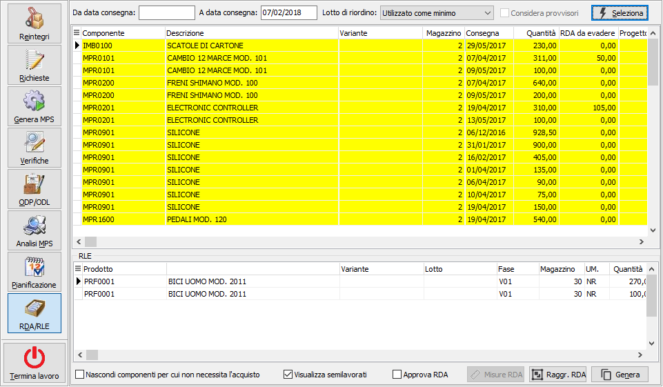
 Le materie prime visualizzate
nella griglia possono essere selezionate o deselezionate con il doppio
clic del mouse oppure utilizzando il tasto destro del mouse che accede
all menù contestuale da dove è possibile effettuare oltre che le selezioni,
anche l'esportazione dei dati visualizzati; le RLE sono presenti solo
a scopo di visualizzazione e saranno comunque sempre generate tutte.
Le materie prime visualizzate
nella griglia possono essere selezionate o deselezionate con il doppio
clic del mouse oppure utilizzando il tasto destro del mouse che accede
all menù contestuale da dove è possibile effettuare oltre che le selezioni,
anche l'esportazione dei dati visualizzati; le RLE sono presenti solo
a scopo di visualizzazione e saranno comunque sempre generate tutte.
Nella parte bassa della finestra sono presenti alcune caselle di spunta
utilizzabili per nascondere componenti visualizzati, ma per cui non necessita
acquisto (spunta) e visualizzare i semilavorati (spunta) o nasconderli.
Se l'utente ha le caratteristiche sarà possibile impostare l'approvazione
delle RDA generate. Premendo il pulsante Genera viene effettuata l'effettiva
generazione delle RDA selezionate e delle RLE.
Se attiva la gestione misure prodotti e sono presenti dei materiali
che includono le misure non sarà consentito di effettuare la generazione
fino a quando non saranno verificate le misure ed eventualmente riassegnate
le quantità in relazione alle misure presenti; la parte bassa della finestra
conterrà il pulsante Misure RDA ed il pulsante Genera sarà disabilitato.
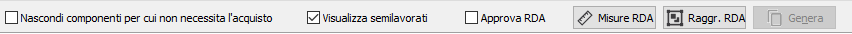
La pressione del pulsante Misure RDA consente l'accesso alla finestra
di verifica delle misure;la parte alta della finestra riporta i materiali
che hanno delle misure collegate, per ogni rigo vengono mostrati nella
seconda griglia le misure che fanno capo al materiale, è possibile che
siano presenti più di un rigo se lo stesso materiale è presente con misure
differenti. Per ogni "raggruppamento" di misure è possibile
modificare il numero dei pezzi o la quantità; la modifica del numero dei
pezzi causa il ricalcolo della quantità in base alla formula ed alle misure
indicate, la modifica della quantità non ha alcun effetto sul numero dei
pezzi. Al salvataggio del rigo viene visualizzata nella colonna "Differenza"
la differenza tra la quantità prevista dal fabbisogno e la quantità attualmente
indicata; premendo il pulsante Chiudi si esce dalla finestra e sarà visualizzato
un messaggio di conferma per ogni differenza riscontrata. La chiusura
della finestra attiverà il pulsante Genera per proseguire nel normale
iter della procedura.
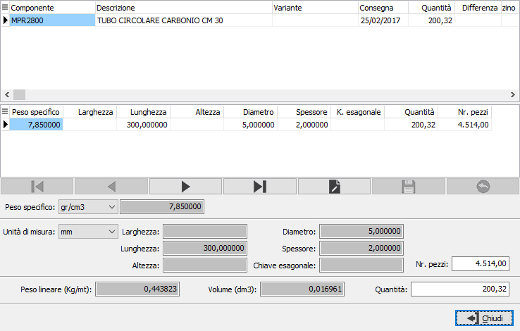
Se gestite le unità produttive multiple ed è attivo a livello di configurazione
il parametro "Unità produttive collegate", è possibile da questa
procedura generare, al posto delle RDA, RDP destinate ad altre unità produttive
riguardanti semilavorati gestiti come materie prime ed instradati verso
altre unità produttive; il funzionamento è analogo alla generazione delle
RDA, comparirà un gruppo in più con l'elenco delle RDP da generare con
indicata l'unità produttiva di destinazione. Le RDP vengono eliminate
e rigenerate fino a che l’unità produttiva assegnataria non ha generato
il piano.
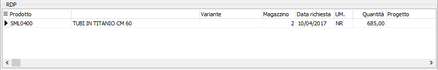
Utilizzando il pulsante Raggruppa RDA è possibile
effettuare il raggruppamento delle richieste di acquisto; questa operazione
consente di selezionare più materiali e generare un'unica richiesta, eliminando
le singole righe. Nella finestra vengono riportati, nella prima griglia,
i materiali raggruppati per prodotto, variante e progetto (in relazione
alla gestione attiva) e selezionando un elemento compaiono, nella griglia
inferiore le righe analitiche relative alle richieste da generare.
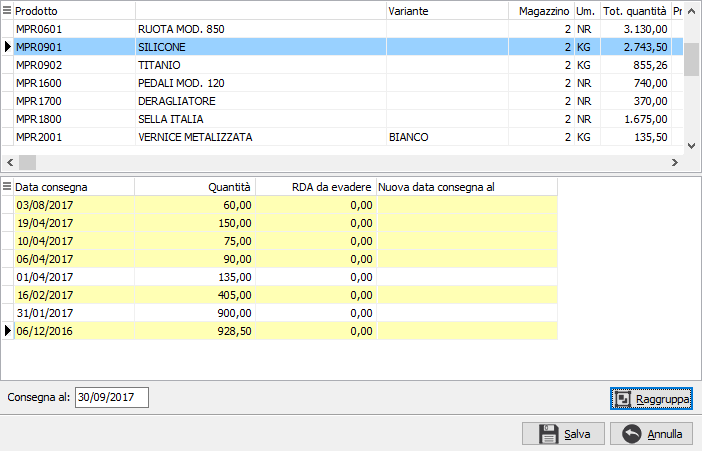
 Da questa griglia è possibile
selezionare le righe da raggruppare con il doppio clic del mouse oppure
utilizzando il menù associato al tasto destro del mouse tramite cui è
possibile anche annullare la selezione a tutte le righe, selezionare tutte
le righe oppure annullare un raggruppamento già effettuato; nella parte
bassa, sotto la griglia, è presente la nuova data di consegna che può
essere anche inserita manualmente (di base viene proposta la data minore
fra tutte le righe selezionate) ed il pulsante Raggruppa. Con le righe
selezionate se si preme il pulsante Raggruppa, viene effettuato il raggruppamento
e le righe appaiono come nell'esempio:
Da questa griglia è possibile
selezionare le righe da raggruppare con il doppio clic del mouse oppure
utilizzando il menù associato al tasto destro del mouse tramite cui è
possibile anche annullare la selezione a tutte le righe, selezionare tutte
le righe oppure annullare un raggruppamento già effettuato; nella parte
bassa, sotto la griglia, è presente la nuova data di consegna che può
essere anche inserita manualmente (di base viene proposta la data minore
fra tutte le righe selezionate) ed il pulsante Raggruppa. Con le righe
selezionate se si preme il pulsante Raggruppa, viene effettuato il raggruppamento
e le righe appaiono come nell'esempio:
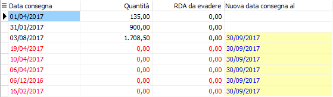
Le righe evidenziate in rosso saranno eliminate ed accorpate al primo
rigo che sarà generato. Tutte le operazioni effettuate all'interno di
questa finestra saranno salvate solo se si preme il pulsante Salva in
basso, se si esce dalla finestra premendo Annulla tutte le modifiche effettuate
andranno perse; analogamente se si esce premendo Salva sarà effettuato
il raggruppamento delle righe come previsto. Una
volta effettuato, il raggruppamento non potrà essere annullato se non
effettuando nuovamente la selezione generale.
Terminata la fase di generazione si accede alla finestra seguente; la
finestra è composta di una pagina relativa alle RDA generate (solitamente
una o più di una in caso di progetto di testa) ed una pagina per le RLE;
su ogni pagina sono disponibili funzionalità diverse.
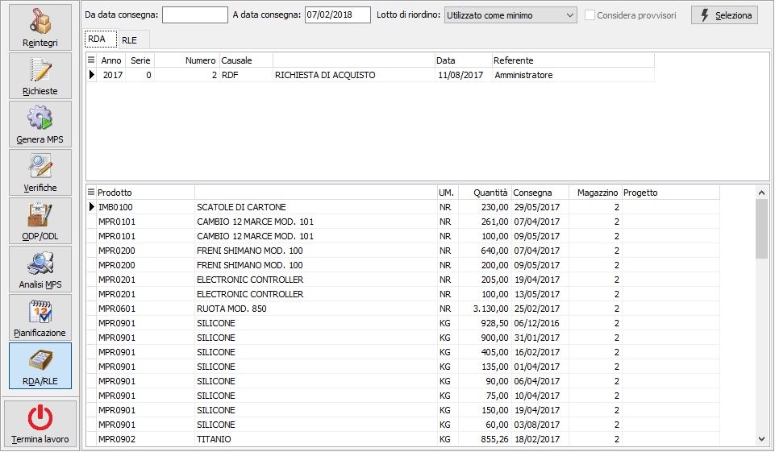
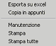
La pagina
RDA mostra le RDA generate riportando nella prima griglia la testata e
sotto le righe; tramite il clic destro dell mouse si accede al menù contestuale
che consente oltre all'esportazione, l'accesso alla manutenzione della
RDA appena generata con la possibilità di generare immediatamente ordine
a fornitore e la stampa.
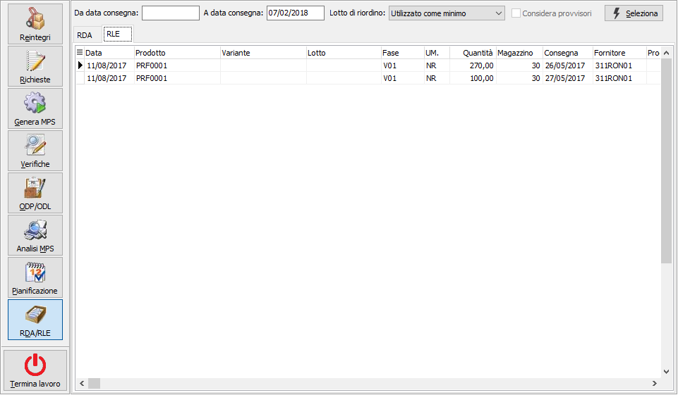
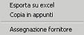
La
pagina RLE mostra le RLE generate; tramite il clic destro dell mouse si
accede al menù contestuale che consente oltre all'esportazione, l'accesso
diretto all'assegnazione fornitore, che se eseguita in questa fase assegna
automaticamente il fornitore presente sull'ODL alle RLE e consente quindi
l'immediata generazione dell'OT con conseguente "Lancio" della
fase.